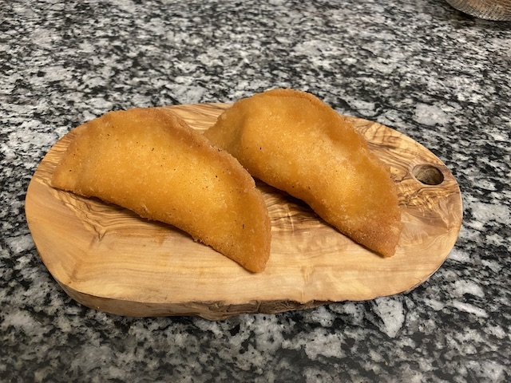

Three Cheese Empanada Filling

Ingredients
- Qhesillo Salvdorian* 50%. Chopped
- Gouda preferably 25% chopped or shredded
- Cream cheese 25%
For every 200 grams of cheese filling you prepare use the following ratios:
- 1 clove garlic for every
- 1 tsp mustered powder, or any spice with a kick (Optional)
Instructions
- Warm the all the cheese except for the cream cheese in a warm
pan until we’ll combined, carefully evaporate the liquid that leaches from the cheese then mix with cream cheese
- Let cool before stuffing empanada
Notes
- use 35g stuffing
- Put sugar in the dough instead of salt
- If you don't have Quesillo, use any soft white melting cheese